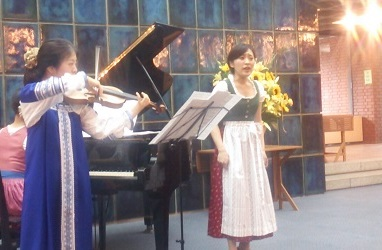

川上明里子(かわかみ ありこ)
高松高校 平成18年卒
(Last updated:2013.7)
プロフィール
高松高校平成18年卒業、東京芸術大学音楽学部声楽科卒業。
第13回全日本高等学校声楽コンクール優秀賞、香川ジュニア音楽コンクール7年連続金賞。
2008年、2009年邦楽ミュージカル「紅色の残響」準主役にて出演
2010年北とぴあ国際音楽祭プレコンサート出演
2011年ヴィヴァルディ作曲「グローリアミサ」ソプラノソロを務める。
現在はウィーンにて研讃を積んでいる。
クラウディア・ヴィスカ、アンドレア・プフェッファー、林康子、青木美稚子、嶺貞子、中野勝美、坂利子の各氏に師事。
